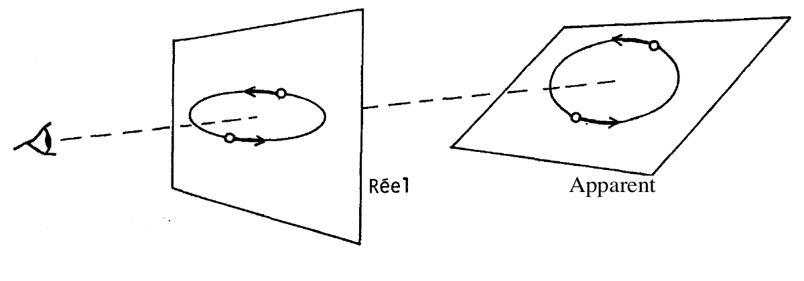
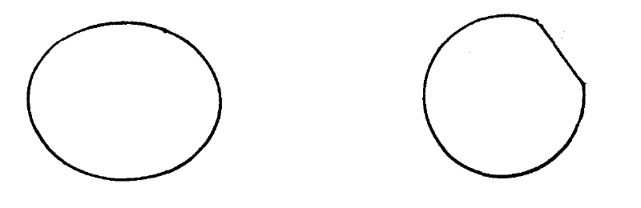

Les modèles dialectiques : la Gestalttheorie (Note technique n° 10, GEPAN)
5.1. Présentation
La Gestalt est une théorie qui prend en compte le caractère fondamentalement nouveau (la forme) de
la perception d'un ensemble par rapport à la
juxtaposition des perceptions des éléments qui le constituent (théorie moléculaire).
Elle est aussi une théorie ouvertement phénoménologique : la perception est une organisation particulière, entre
toutes les organisations possibles, des données perceptives.
Le choix de cette organisation particulière dans le processus perceptif est général pour l'espèce humaine, il est,
en quelque sorte, inné. Contrairement aux autres théories dialectiques (PIAGET,
BRUNER), ce choix ne résulte pas de la rencontre particulière entre un sujet et
un environnement donnés.
Pour la Gestalt, les structures du réel correspondent à des structures neurologiques similaires
(relation isomorphique). C'est cet isomorphisme pré-existant qui conditionne la perception : les structures
introduisent une organisation particulière, celle de la « bonne forme » ou « forme prégnante ».
5.2. Les bonnes formes
Cette théorie, qui peut apparaître rébarbative au néophyte, ne doit pas cacher un énorme travail expérimental pour
mettre en lumière la primauté de ces bonnes formesPour une revue approfondie, voir GUILLAUME (1937) ou KOFFKA
(1962) Koffka, K.: Principles of Gestalt Psychology, London, Routledge
and Kegan Paul, (1re édition : ).
En général, une bonne forme est simple, symétrique, fermée. Le cercle constitue, peut être, la bonne forme par
excellence. Ainsi, JOHANSSON (1975) Johansson, G.: Visual motion perception, Scientific American, vol. 232, n° 6,
rapporte un protocole expérimental dans lequel deux points lumineux
circulant sur une ellipse, située dans un plan perpendiculaire à la direction du regard de l'observateur, sont perçus
se déplaçant sur un cercle incliné par rapport à cette droite.
D'après JOHANSSON (1975)

Pour la Gestalt ce sont les structures qui priment à la fois sur le sujet et sur le stimulus, pour
préserver, comme le dit KOFFKA (1962) Koffka, K.: Principles of Gestalt Psychology, London, Routledge and Kegan Paul,
(1re édition : ), la
constance des choses réelles malgré leurs changements apparents.
Autrement dit, la bonne forme se conserve dans la perception malgré les changements du stimulus. Cette conservation
obéit à certaines lois : similitude, transposition, constance (que nous avons déjà signalée)…
Ainsi, l'ellipse ou le cercle tronqué représentés ci-dessous sont perçus en tant que cercles, lorsqu'ils sont
présentés dans un temps bref. La loi de similitude explique ce fait par la primauté du cercle en tant que « bonne
forme ».
D'après GUILLAUME (1937)Référence absente de la
bibliographie de la note technique.

5.3. Conclusion
A l'heure actuelle, la Gestalttheorie est incapable de résister aux critiques qui lui ont été
adressées, en particulier contre le caractère inné ou primitif des structures perceptives (voir par exemple FRANCES, 1963 Francès, R.: La perception des
formes et des objets, in Fraisse, P., Piaget, J., Traité de psychologie expérimentale, tome VI, Paris,
PUF, ). Mais elle reste capitale en tant que corpus de données
permettant d'avancer l'importance première de la structuration introduite dans les données sensorielles par les
processus perceptifs.
Que cette structuration soit extérieure et antérieure au perceveur, ou que, au contraire, elle soit introduite par
le sujet, il n'en reste pas moins qu'elle n'est pas dans le stimulus, mais dans la rencontre entre celui-ci et le
sujet perceveur.
A partir de là, l'accent peut être mis sur les lois de structurations constantes chez tous les sujets humains,
conformément aux choix du modèle Gestaltiste. Mais, on peut aussi signaler les variations de ces structurations en
fonction du développement ou des attitudes, et indiquer que les structurations primitives sont en fait inséparables
de l'expérience perceptive des formes qui nous entourent. On adopte alors une attitude ouvertement dialectique
puisque l'état nouveau -structuration- résulte de la confrontation de deux états antérieurs plus simples (le sujet
et son environnement).
5.4. Remarque
Dans le domaine de l'étude du témoignage humain, la
connaissance des faits expérimentaux apportés par les gestaltistes est fondamentale pour la compréhension du rapport
existant entre la forme projective d'un stimulus et la forme globale perçue par le témoin.
L'exemple de la forme prégnante du cercle illustre cette affirmation. Il permet d'expliquer le fait que certains
témoins attribuent une forme de disque à une image visuelle qui n'est qu'une ellipse, voire une lunule.
Ce phénomène a été signalé dans quelques cas où le stimulus a été identifié a posteriori (voir,
par exemple, EBERS et al, 1981 ).
Mais la connaissance des lois gestaltistes doit avant tout permettre de mieux cerner les appréciations des
caractéristiques formelles d'un stimulus inconnu, apportées par un témoin.